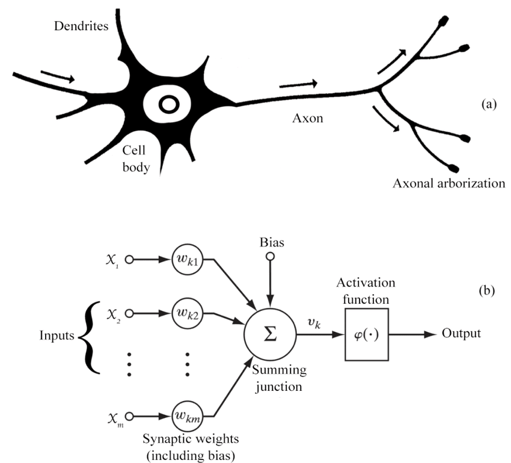

Introduction to Threshold Logic Unit (TLU): Biology, Mathematics, and Python Implementation
Introduction
Artificial intelligence and neural networks are inspired by biological neurons. One of the simplest artificial neuron models is the Threshold Logic Unit (TLU), which forms the foundation of perceptrons and modern deep learning architectures. In this post, we will explore the biological origins, mathematical formulation, and a practical Python implementation of the TLU. That's a great starting point to understand artificial neurons and the foundation of deep learning. Don't be afraid by the complexity, it's a great place to start.
Biological Inspiration
The TLU is inspired by the behavior of biological neurons. A neuron in the human brain receives inputs from other neurons through synapses. If the combined signal exceeds a certain threshold, the neuron fires and sends a signal to the next neuron.
In simple terms:
-
Neurons receive input signals.
-
Each input is weighted based on its importance.
-
If the weighted sum of inputs exceeds a threshold, the neuron activates.
This is a binary activation system, where the neuron either fires (1) or remains inactive (0).

- \((a)\) : Biological Neuron
- \((b)\) : Artificial Neuron
Mathematical Model
A Threshold Logic Unit (TLU) is mathematically defined as:
where: - \( x_i \) are the input values. - \( w_i \) are the corresponding weights. - \( \theta \) is the threshold. - \( f(z) \) is the step activation function:
This function determines whether the neuron fires (1) or stays inactive (0).
Python Implementation
Let's implement a simple Threshold Logic Unit (TLU) in Python.
import numpy as np
def step_function(x):
return 1 if x >= 0 else 0
def TLU(inputs, weights, threshold):
weighted_sum = np.dot(inputs, weights) - threshold
return step_function(weighted_sum)
# Example usage:
inputs = np.array([1, 0, 1]) # Binary inputs
weights = np.array([0.5, 0.5, 0.5]) # Weight vector
threshold = 0.7
output = TLU(inputs, weights, threshold)
print(f"TLU Output: {output}")
Explanation:
- The
step_function(x)returns1ifxis greater than or equal to zero, otherwise0. - The
TLU(inputs, weights, threshold)computes the weighted sum, subtracts the threshold, and applies the step function. - We test it with a simple example where
inputs = [1, 0, 1],weights = [0.5, 0.5, 0.5], andthreshold = 0.7.
Visualization of Decision Boundary
A TLU is a linear classifier, meaning it can separate data with a straight decision boundary. Let's visualize this boundary using Matplotlib.
import matplotlib.pyplot as plt
def plot_tlu_decision_boundary(weight, threshold):
x = np.linspace(-2, 2, 100)
y = (-weight[0] * x + threshold) / weight[1]
plt.plot(x, y, label="Decision Boundary")
plt.axhline(0, color='gray', linestyle='--')
plt.axvline(0, color='gray', linestyle='--')
plt.xlim(-2, 2)
plt.ylim(-2, 2)
plt.xlabel("x1")
plt.ylabel("x2")
plt.legend()
plt.title("TLU Decision Boundary")
plt.show()
# Example decision boundary
weights = np.array([0.5, -0.5])
threshold = 0.2
plot_tlu_decision_boundary(weights, threshold)
Limitations of TLU
While the Threshold Logic Unit is a fundamental concept, it has limitations: - It can only solve linearly separable problems (like AND and OR logic gates). - It fails for problems like XOR, which are not linearly separable. - More advanced models like Perceptrons and Multi-Layer Neural Networks extend this idea by using different activation functions and multiple layers.
Conclusion
The TLU is a great starting point to understand artificial neurons and the foundation of deep learning. Even though modern neural networks use non-linear activation functions like sigmoid, ReLU, and tanh, understanding TLU provides fundamental insights into how neurons process information.
In future posts, we will extend this idea to Perceptrons and Neural Networks.
References
- Rosenblatt, F. (1958). The Perceptron: A Probabilistic Model for Information Storage and Organization in the Brain.
- McCulloch, W. S., & Pitts, W. (1943). A logical calculus of the ideas immanent in nervous activity.